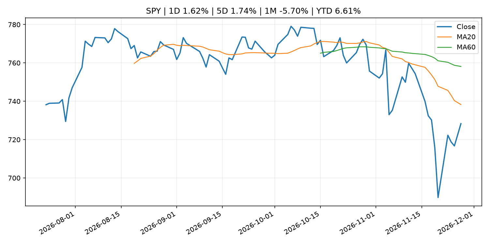
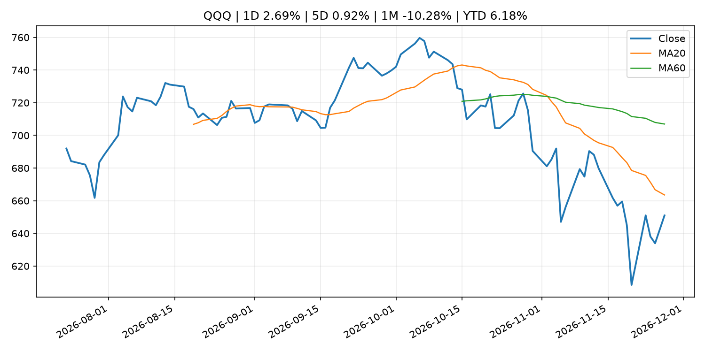
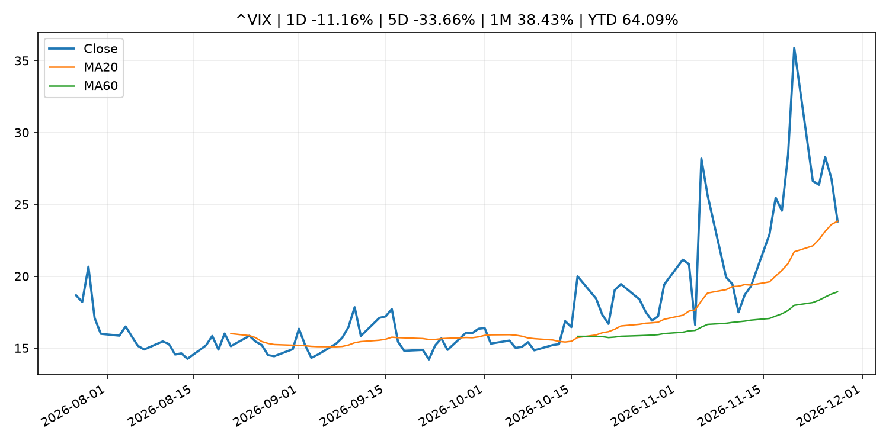
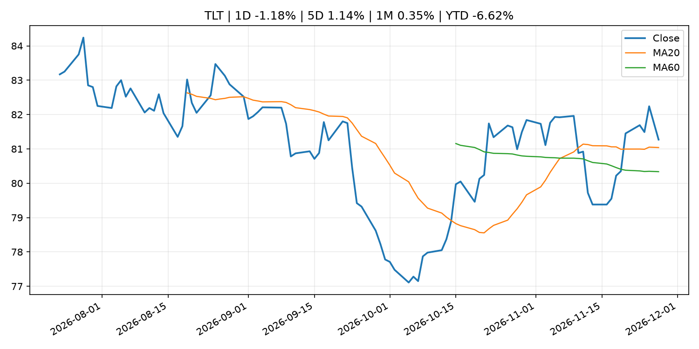
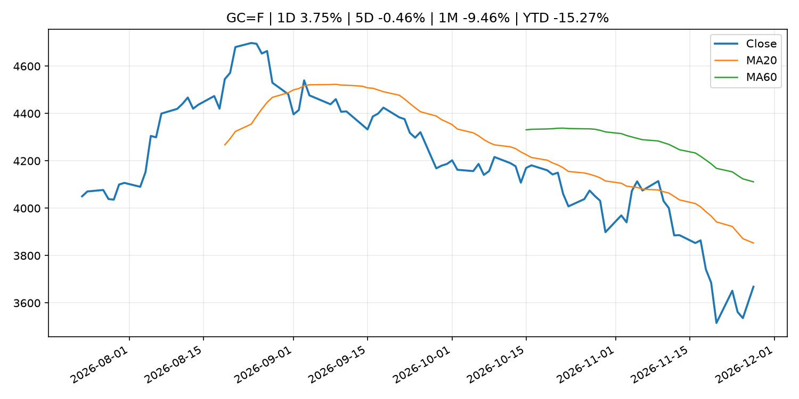
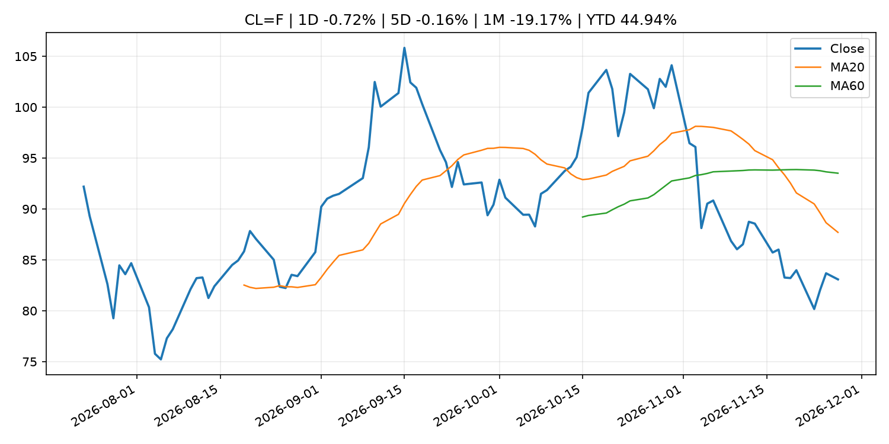
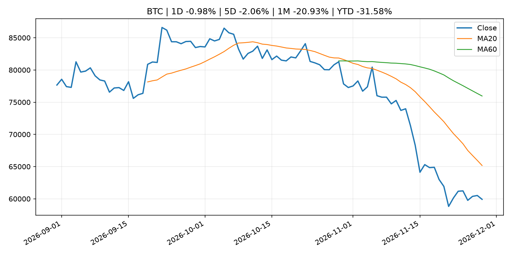
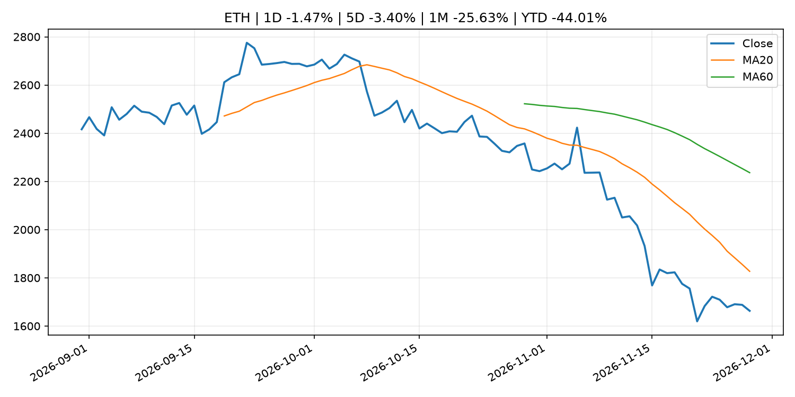
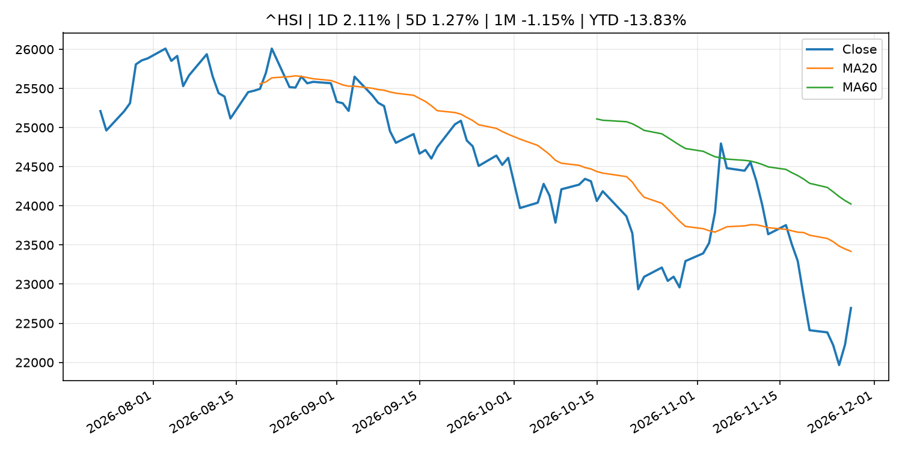

Global Macro Morning Briefing - 2026-11-28
Not financial advice / 非投资建议。
0. 今日总览
- 市场状态：mixed。股指上涨、波动率或美元回落，市场更接近风险偏好改善。 但存在信号冲突，需要降低单一叙事置信度。
- 今日三大主线：
- earnings: Liesman: Nvidia whiplash tests Kevin Warsh’s push to read market signals
- earnings: Buyer beware? Nvidia's volatile swings expose risks of single-stock ETFs
- regulation: Injective asks SEC to allow order books for tokenized stock trading
- 一句话结论：今日晨报重点关注：大型科技股盈利和资本开支会影响纳指、半导体和 AI 交易主线。；大型科技股盈利和资本开支会影响纳指、半导体和 AI 交易主线。。跨资产方面，SPY 1D 1.62%；QQQ 1D 2.69%；^VIX 1D -11.16%；TLT 1D -1.18%；GC=F 1D 3.75%；CL=F 1D -0.72%；BTC 1D -0.98%；ETH 1D -1.47%；股指上涨、波动率或美元回落，市场更接近风险偏好改善。 但存在信号冲突，需要降低单一叙事置信度。政策、通胀、利率、美元、美债、能源和加密监管仍是主要观察线索。所有结论仅基于公开数据与短摘要整理，不构成投资建议。
1. 隔夜跨资产市场
- 美股：SPY 1D 1.62%，QQQ 1D 2.69%，整体趋势需结合 VIX 和利率确认。
- 美债/美元：TLT 1D -1.18%，美元指数 1D 0.33%，是判断折现率压力的核心线索。
- 黄金/原油：黄金 1D 3.75%，原油 1D -0.72%，用于观察避险、通胀和地缘风险。
- 加密：BTC 1D -0.98%，ETH 1D -1.47%，关注是否独立于纳指走出加密自身行情。
- 港股/A股：恒生 1D 2.11%，沪深300/上证 1D n/a，重点看中国政策预期与人民币线索。
- 风险观察：确认风险偏好是否扩散到小盘股、信用利差和周期品。
US_EQUITY
| symbol | latest close | 1D | 5D | 1M | YTD | trend |
|---|---|---|---|---|---|---|
| SPY | 728.32 | 1.62% | 1.74% | -5.70% | 6.61% | downtrend |
| QQQ | 650.99 | 2.69% | 0.92% | -10.28% | 6.18% | downtrend |
| DIA | 507.60 | 1.26% | 3.43% | -3.26% | 4.96% | downtrend |
| IWM | 273.79 | 1.83% | 3.62% | -2.67% | 10.05% | downtrend |
| VTI | 359.40 | 1.76% | 1.98% | -5.21% | 6.87% | downtrend |
US_MACRO_MARKET
| symbol | latest close | 1D | 5D | 1M | YTD | trend |
|---|---|---|---|---|---|---|
| ^VIX | 23.81 | -11.16% | -33.66% | 38.43% | 64.09% | range_bound |
| DX-Y.NYB | 104.01 | 0.33% | 0.11% | 1.78% | 5.68% | uptrend |
| TLT | 81.27 | -1.18% | 1.14% | 0.35% | -6.62% | uptrend |
| IEF | 91.66 | -0.43% | 0.92% | 0.89% | -4.60% | uptrend |
COMMODITIES
| symbol | latest close | 1D | 5D | 1M | YTD | trend |
|---|---|---|---|---|---|---|
| GC=F | 3,668.50 | 3.75% | -0.46% | -9.46% | -15.27% | strong_downtrend |
| SI=F | 43.70 | 9.11% | -1.39% | -18.25% | -38.06% | strong_downtrend |
| CL=F | 83.08 | -0.72% | -0.16% | -19.17% | 44.94% | strong_downtrend |
| BZ=F | 90.84 | -3.98% | -1.24% | -21.23% | 49.53% | strong_downtrend |
| NG=F | 3.49 | 6.79% | 6.82% | 23.93% | -3.51% | strong_uptrend |
| HG=F | 5.60 | 5.03% | -0.44% | -15.67% | -0.70% | strong_downtrend |
HK_MARKET
| symbol | latest close | 1D | 5D | 1M | YTD | trend |
|---|---|---|---|---|---|---|
| ^HSI | 22,694.77 | 2.11% | 1.27% | -1.15% | -13.83% | downtrend |
| 0700.HK | 352.00 | 3.23% | 2.33% | -6.78% | -43.50% | strong_downtrend |
| 9988.HK | 88.30 | 7.03% | 5.94% | -8.12% | -40.74% | strong_downtrend |
| 3690.HK | 67.85 | 8.21% | 2.03% | -1.95% | -35.13% | downtrend |
| 1810.HK | 27.80 | 4.51% | 0.58% | 8.26% | -30.98% | range_bound |
| 1211.HK | 59.00 | 3.69% | -5.37% | -14.06% | -40.25% | strong_downtrend |
CRYPTO
| symbol | latest close | 1D | 5D | 1M | YTD | trend |
|---|---|---|---|---|---|---|
| BTC | 59,914.81 | -0.98% | -2.06% | -20.93% | -31.58% | strong_downtrend |
| ETH | 1,663.05 | -1.47% | -3.40% | -25.63% | -44.01% | strong_downtrend |
| SOLANA | 71.68 | 1.00% | 1.52% | -20.40% | -42.43% | strong_downtrend |
| BINANCECOIN | 554.10 | 0.09% | -0.83% | -20.00% | -35.77% | strong_downtrend |
| RIPPLE | 0.95 | 0.57% | 2.20% | -19.55% | -48.48% | strong_downtrend |
2. 今日最重要的 10 条新闻
1. Liesman: Nvidia whiplash tests Kevin Warsh’s push to read market signals
- 来源：CNBC Economy
- 时间：2026-11-27T13:29:43+00:00
- 地区：US
- 事件类型：earnings
- 重要性层级：Tier 2
- 一句话摘要：The extreme market gyrations and the drama surrounding Nvidia this past week have highlighted the dilemma facing Federal Reserve Chairman Kevin Warsh.
- 为什么重要：大型科技股盈利和资本开支会影响纳指、半导体和 AI 交易主线。
- 可能影响：主要影响 QQQ，方向为 mixed，强度 high；AI 资本开支会影响大型科技股盈利和估值预期。
- 资产：QQQ 方向：mixed 强度：high 原因：AI 资本开支会影响大型科技股盈利和估值预期。
- 资产：SMH 方向：mixed 强度：high 原因：AI 投资周期直接影响半导体需求。
- 资产：NVDA 方向：mixed 强度：high 原因：AI 训练和推理需求是英伟达收入预期核心变量。
- 资产：MSFT 方向：mixed 强度：medium 原因：云和 AI 资本开支影响利润率与增长叙事。
- 资产：GOOGL 方向：mixed 强度：medium 原因：AI 投资和搜索商业化影响估值。
- 资产：META 方向：mixed 强度：medium 原因：AI 基建支出与广告效率共同影响市场预期。
- 原文链接：https://www.cnbc.com/2026/11/25/nvidia-kevin-warsh-fed-market-signals.html
2. Buyer beware? Nvidia's volatile swings expose risks of single-stock ETFs
- 来源：CNBC Economy
- 时间：2026-11-26T16:00:01+00:00
- 地区：US
- 事件类型：earnings
- 重要性层级：Tier 2
- 一句话摘要：ETF Action founding partner Mike Akins and GraniteShares CEO Will Rhind react to Nvidia's sharp losses and latest comeback.
- 为什么重要：大型科技股盈利和资本开支会影响纳指、半导体和 AI 交易主线。
- 可能影响：主要影响 BTC，方向为 mixed，强度 high；加密监管或 ETF 进展会改变 BTC 的资金流和风险溢价。
- 资产：BTC 方向：mixed 强度：high 原因：加密监管或 ETF 进展会改变 BTC 的资金流和风险溢价。
- 资产：ETH 方向：mixed 强度：high 原因：监管框架会影响 ETH 产品化和机构参与度。
- 资产：COIN 方向：mixed 强度：medium 原因：监管清晰度和执法风险会影响交易平台估值。
- 资产：crypto market 方向：mixed 强度：high 原因：信息影响整个加密市场结构，但方向取决于细节。
- 资产：QQQ 方向：mixed 强度：high 原因：AI 资本开支会影响大型科技股盈利和估值预期。
- 资产：SMH 方向：mixed 强度：high 原因：AI 投资周期直接影响半导体需求。
- 原文链接：https://www.cnbc.com/2026/11/26/nvidias-volatile-swings-expose-risks-of-single-stock-etfs.html
3. Injective asks SEC to allow order books for tokenized stock trading
- 来源：CoinDesk
- 时间：2026-11-27T11:07:17+00:00
- 地区：global
- 事件类型：regulation
- 重要性层级：Tier 2
- 一句话摘要：Injective asks SEC to allow order books for tokenized stock trading
- 为什么重要：监管变化会改变行业盈利预期和资产风险溢价。
- 可能影响：主要影响 BTC，方向为 mixed，强度 high；加密监管或 ETF 进展会改变 BTC 的资金流和风险溢价。
- 资产：BTC 方向：mixed 强度：high 原因：加密监管或 ETF 进展会改变 BTC 的资金流和风险溢价。
- 资产：ETH 方向：mixed 强度：high 原因：监管框架会影响 ETH 产品化和机构参与度。
- 资产：COIN 方向：mixed 强度：medium 原因：监管清晰度和执法风险会影响交易平台估值。
- 资产：crypto market 方向：mixed 强度：high 原因：信息影响整个加密市场结构，但方向取决于细节。
- 原文链接：https://www.coindesk.com/markets/2026/11/27/injective-asks-sec-to-allow-order-books-for-tokenized-stock-trading
4. Brazil’s stock exchange teams up with major banks to launch real-pegged stablecoin
- 来源：CoinDesk
- 时间：2026-11-27T10:51:27+00:00
- 地区：global
- 事件类型：crypto_market_structure
- 重要性层级：Tier 2
- 一句话摘要：Brazil’s stock exchange teams up with major banks to launch real-pegged stablecoin
- 为什么重要：加密市场结构和监管变化会影响 BTC、ETH 及相关股票的风险溢价。
- 可能影响：主要影响 BTC，方向为 mixed，强度 high；加密监管或 ETF 进展会改变 BTC 的资金流和风险溢价。
- 资产：BTC 方向：mixed 强度：high 原因：加密监管或 ETF 进展会改变 BTC 的资金流和风险溢价。
- 资产：ETH 方向：mixed 强度：high 原因：监管框架会影响 ETH 产品化和机构参与度。
- 资产：COIN 方向：mixed 强度：medium 原因：监管清晰度和执法风险会影响交易平台估值。
- 资产：crypto market 方向：mixed 强度：high 原因：信息影响整个加密市场结构，但方向取决于细节。
- 原文链接：https://www.coindesk.com/business/2026/11/27/brazil-s-stock-exchange-teams-up-with-major-banks-to-launch-real-pegged-stablecoin
5. Keynote speech by Executive Director KAMIYAMA at the IMF MCM-OAP Seminar in Tokyo (Digital Money and Payments: Transitioning Toward a New Paradigm)
- 来源：Bank of Japan Announcements
- 时间：2026-11-27T10:15:00+09:00
- 地区：Japan
- 事件类型：central_bank_speech
- 重要性层级：Tier 2
- 一句话摘要：Keynote speech by Executive Director KAMIYAMA at the IMF MCM-OAP Seminar in Tokyo (Digital Money and Payments: Transitioning Toward a New Paradigm)
- 为什么重要：央行官员表态可能影响市场对下一次会议的定价。
- 可能影响：可能影响利率、汇率、风险资产或大宗商品预期，但当前公开信息不足以判断明确方向。
- 资产：暂无明确资产映射
- 方向：unknown
- 强度：low
- 原因：公开信息不足以判断方向。
- 原文链接：http://www.boj.or.jp/en/about/press/koen_2026/ko261127a.htm
6. Decisions taken by the Governing Council of the ECB (in addition to decisions setting interest rates)
- 来源：ECB Press Releases
- 时间：2026-11-27T15:00:00+01:00
- 地区：EU
- 事件类型：other
- 重要性层级：Tier 3
- 一句话摘要：Decisions taken by the Governing Council of the ECB (in addition to decisions setting interest rates)
- 为什么重要：这条信息暂未匹配到重大宏观、政策或市场事件，更适合作为背景跟踪。
- 可能影响：更偏背景信息，短期市场影响可能有限。
- 资产：暂无明确资产映射
- 方向：unknown
- 强度：low
- 原因：公开信息不足以判断方向。
- 原文链接：https://www.ecb.europa.eu//press/govcdec/otherdec/2026/html/ecb.gc261127~13ecadc0f2.en.html
7. ECB Consumer Expectations Survey results – October 2026
- 来源：ECB Press Releases
- 时间：2026-11-27T10:00:00+01:00
- 地区：EU
- 事件类型：other
- 重要性层级：Tier 3
- 一句话摘要：ECB Consumer Expectations Survey results – October 2026
- 为什么重要：这条信息暂未匹配到重大宏观、政策或市场事件，更适合作为背景跟踪。
- 可能影响：更偏背景信息，短期市场影响可能有限。
- 资产：暂无明确资产映射
- 方向：unknown
- 强度：low
- 原因：公开信息不足以判断方向。
- 原文链接：https://www.ecb.europa.eu//press/pr/date/2026/html/ecb.pr261127~2e53af695e.en.html
3. 政策与央行观察
1. Injective asks SEC to allow order books for tokenized stock trading
- 来源：CoinDesk
- 时间：2026-11-27T11:07:17+00:00
- 地区：global
- 事件类型：regulation
- 重要性层级：Tier 2
- 一句话摘要：Injective asks SEC to allow order books for tokenized stock trading
- 为什么重要：监管变化会改变行业盈利预期和资产风险溢价。
- 可能影响：主要影响 BTC，方向为 mixed，强度 high；加密监管或 ETF 进展会改变 BTC 的资金流和风险溢价。
- 资产：BTC 方向：mixed 强度：high 原因：加密监管或 ETF 进展会改变 BTC 的资金流和风险溢价。
- 资产：ETH 方向：mixed 强度：high 原因：监管框架会影响 ETH 产品化和机构参与度。
- 资产：COIN 方向：mixed 强度：medium 原因：监管清晰度和执法风险会影响交易平台估值。
- 资产：crypto market 方向：mixed 强度：high 原因：信息影响整个加密市场结构，但方向取决于细节。
- 原文链接：https://www.coindesk.com/markets/2026/11/27/injective-asks-sec-to-allow-order-books-for-tokenized-stock-trading
2. Brazil’s stock exchange teams up with major banks to launch real-pegged stablecoin
- 来源：CoinDesk
- 时间：2026-11-27T10:51:27+00:00
- 地区：global
- 事件类型：crypto_market_structure
- 重要性层级：Tier 2
- 一句话摘要：Brazil’s stock exchange teams up with major banks to launch real-pegged stablecoin
- 为什么重要：加密市场结构和监管变化会影响 BTC、ETH 及相关股票的风险溢价。
- 可能影响：主要影响 BTC，方向为 mixed，强度 high；加密监管或 ETF 进展会改变 BTC 的资金流和风险溢价。
- 资产：BTC 方向：mixed 强度：high 原因：加密监管或 ETF 进展会改变 BTC 的资金流和风险溢价。
- 资产：ETH 方向：mixed 强度：high 原因：监管框架会影响 ETH 产品化和机构参与度。
- 资产：COIN 方向：mixed 强度：medium 原因：监管清晰度和执法风险会影响交易平台估值。
- 资产：crypto market 方向：mixed 强度：high 原因：信息影响整个加密市场结构，但方向取决于细节。
- 原文链接：https://www.coindesk.com/business/2026/11/27/brazil-s-stock-exchange-teams-up-with-major-banks-to-launch-real-pegged-stablecoin
3. Keynote speech by Executive Director KAMIYAMA at the IMF MCM-OAP Seminar in Tokyo (Digital Money and Payments: Transitioning Toward a New Paradigm)
- 来源：Bank of Japan Announcements
- 时间：2026-11-27T10:15:00+09:00
- 地区：Japan
- 事件类型：central_bank_speech
- 重要性层级：Tier 2
- 一句话摘要：Keynote speech by Executive Director KAMIYAMA at the IMF MCM-OAP Seminar in Tokyo (Digital Money and Payments: Transitioning Toward a New Paradigm)
- 为什么重要：央行官员表态可能影响市场对下一次会议的定价。
- 可能影响：可能影响利率、汇率、风险资产或大宗商品预期，但当前公开信息不足以判断明确方向。
- 资产：暂无明确资产映射
- 方向：unknown
- 强度：low
- 原因：公开信息不足以判断方向。
- 原文链接：http://www.boj.or.jp/en/about/press/koen_2026/ko261127a.htm
4. 市场异动与图表
- SPY 上涨 1.62%
- QQQ 上涨 2.69%
- VIX 下跌 -11.16%
- TLT 下跌 -1.18%
- DXY 上涨 0.33%
- Gold 上涨 3.75%
信号矛盾
- 黄金和美元同时上涨，可能反映避险或地缘风险。
SPY

QQQ

^VIX

TLT

GC=F

CL=F

BTC

ETH

^HSI

5. 华尔街与机构公开观点
- 暂无可靠公开观点。
6. 今日重点关注
- 经济数据：经济数据：暂无可靠公开日历数据；如配置经济日历源后可自动填充。
- 央行讲话：央行讲话：暂无可靠公开日历数据；重点跟踪 Fed、ECB、BoJ、PBOC 官网 RSS。
- 财报：财报：暂无可靠数据。
- 政策事件：政策事件：暂无可靠数据。
- 风险提醒：风险提醒：关注数据源失败项、突发地缘风险、利率和美元的二阶反应。
7. 英文金融表达与宏观概念
- risk-off：避险模式，资金偏向美元、国债、黄金等防御资产。 例句：A geopolitical shock can push markets into risk-off mode.
- market structure：市场结构，指交易、托管、清算、ETF、监管等制度安排。 例句：Crypto market structure rules can affect institutional participation.
- AI capex：AI 资本开支，指云厂商和科技公司投入 AI 基建的支出。 例句：AI capex guidance can move semiconductor stocks.
- inflation expectations：通胀预期，指家庭、企业或市场对未来通胀的预估。 例句：Inflation expectations can shape wage bargaining and bond yields.
- real yield：实际收益率，名义利率扣除通胀预期后的收益率。 例句：Gold often reacts more to real yields than nominal yields.
- terminal rate：终端利率，市场预期本轮加息周期的最高政策利率。 例句：A higher terminal rate can pressure growth stocks.
8. 背景材料
- My husband secretly sends his ex-wife $1,500 a month after she lost her job. We have $2.4 million saved. Has he lied by omission?（MarketWatch Top Stories，other）：“He explained that he wasn’t trying to hide the payment, but his former wife lost her job in a medical billing company.”
- Decisions taken by the Governing Council of the ECB (in addition to decisions setting interest rates)（ECB Press Releases，other）：Decisions taken by the Governing Council of the ECB (in addition to decisions setting interest rates)
- The S&P 500 is in a correction. Bear markets and recessions don't always follow（CNBC Economy，other）：The November sell-off has so far pushed the S&P 500 into a correction. History shows that a correction doesn't always lead to a bear market, or a recession.
- Bitcoin 'death cross' is coming. Here's what happened after previous 13.（CoinDesk，other）：Bitcoin 'death cross' is coming. Here's what happened after previous 13.
- Bitcoin on course to end seven-week losing streak while trailing stock rebound（CoinDesk，other）：Bitcoin on course to end seven-week losing streak while trailing stock rebound
- Live updates: Bitcoin's Thanksgiving gains prove fleeting（CoinDesk，other）：Live updates: Bitcoin's Thanksgiving gains prove fleeting
- Next ECB chief favors tokenized bank deposits over stablecoins and bitcoin（CoinDesk，other）：Next ECB chief favors tokenized bank deposits over stablecoins and bitcoin
- Bitcoin tops $61,000 as Nasdaq futures extend Wednesday’s rebound（CoinDesk，other）：Bitcoin tops $61,000 as Nasdaq futures extend Wednesday’s rebound
- ECB Consumer Expectations Survey results – October 2026（ECB Press Releases，other）：ECB Consumer Expectations Survey results – October 2026
- Ripple's lending plan moves closer to tapping XRP Ledger's $800 million in stablecoins（CoinDesk，other）：Ripple's lending plan moves closer to tapping XRP Ledger's $800 million in stablecoins
- (BOJ Review) Developments in JGB Market-Making Business by Securities Companies（Bank of Japan Announcements，other）：(BOJ Review) Developments in JGB Market-Making Business by Securities Companies
- A tiny payment can expose the IP address behind a bitcoin wallet, developer finds（CoinDesk，other）：A tiny payment can expose the IP address behind a bitcoin wallet, developer finds
- Bitcoin’s dormant supply rises, a behavior seen during previous bear-market bottoming phases（CoinDesk，other）：Bitcoin’s dormant supply rises, a behavior seen during previous bear-market bottoming phases
- Meeting of 28-29 October 2026（ECB Press Releases，other）：Meeting of 28-29 October 2026
- Bitcoin ETFs are bleeding cash and the Fed is unlikely to help（CoinDesk，other）：Bitcoin ETFs are bleeding cash and the Fed is unlikely to help
- Hong Kong-based crypto trading firm Auros is winding down operations（CoinDesk，other）：Hong Kong-based crypto trading firm Auros is winding down operations
- Bitcoin little changed, DeFi tokens lead the bounce as U.S. marks Thanksgiving（CoinDesk，other）：Bitcoin little changed, DeFi tokens lead the bounce as U.S. marks Thanksgiving
- $7 billion of bitcoin options expire Friday, and the biggest bets look starkly different from October（CoinDesk，other）：$7 billion of bitcoin options expire Friday, and the biggest bets look starkly different from October
- Beware higher correlation but nab high U.S. credit yields, fund managers say（CNBC Economy，other）：The AI boom could trigger a recession, but data centers remain an attractive investment opportunity, a hedge fund manager said.
9. 数据源、失败项与免责声明
- 采集时间：2026-11-28T03:45:05
- 数据源：公开 RSS、Yahoo Finance、CoinGecko、AKShare、FRED、SEC data.sec.gov，以及用户自有 inputs/reports 文件。
- 合规说明：不绕过 WSJ、Bloomberg、FT、Reuters 等付费墙；对付费媒体只使用公开 RSS 标题、摘要、链接和发布时间。
- 免责声明：Not financial advice / 非投资建议。本项目仅供个人学习、研究和信息整理，不构成投资建议、交易建议或任何收益承诺。
- 失败或跳过的数据源：
- crypto data failed coin=dogecoin
- China market data failed symbol=上证指数: stock_zh_index_daily_em 已在 1.20.44 更名为 index_zh_daily_em，请改用 ak.index_zh_daily_em；参数与返回的列也可能有调整，用 ak.interface_info("index_zh_daily_em") 查看。完整对照见 https://akshare.akfamily.xyz/changelog.html#changelog-rename
- China market data failed symbol=深证成指: stock_zh_index_daily_em 已在 1.20.44 更名为 index_zh_daily_em，请改用 ak.index_zh_daily_em；参数与返回的列也可能有调整，用 ak.interface_info("index_zh_daily_em") 查看。完整对照见 https://akshare.akfamily.xyz/changelog.html#changelog-rename
- China market data failed symbol=创业板指: stock_zh_index_daily_em 已在 1.20.44 更名为 index_zh_daily_em，请改用 ak.index_zh_daily_em；参数与返回的列也可能有调整，用 ak.interface_info("index_zh_daily_em") 查看。完整对照见 https://akshare.akfamily.xyz/changelog.html#changelog-rename
- China market data failed symbol=沪深300: stock_zh_index_daily_em 已在 1.20.44 更名为 index_zh_daily_em，请改用 ak.index_zh_daily_em；参数与返回的列也可能有调整，用 ak.interface_info("index_zh_daily_em") 查看。完整对照见 https://akshare.akfamily.xyz/changelog.html#changelog-rename
- China market data failed symbol=中证500: stock_zh_index_daily_em 已在 1.20.44 更名为 index_zh_daily_em，请改用 ak.index_zh_daily_em；参数与返回的列也可能有调整，用 ak.interface_info("index_zh_daily_em") 查看。完整对照见 https://akshare.akfamily.xyz/changelog.html#changelog-rename
- China market data failed symbol=科创50: stock_zh_index_daily_em 已在 1.20.44 更名为 index_zh_daily_em，请改用 ak.index_zh_daily_em；参数与返回的列也可能有调整，用 ak.interface_info("index_zh_daily_em") 查看。完整对照见 https://akshare.akfamily.xyz/changelog.html#changelog-rename
- FRED_API_KEY not set; skipping FRED macro series
- SEC failed cik=0000320193
- SEC failed cik=0000789019
- SEC failed cik=0001045810
- SEC failed cik=0001318605
- SEC failed cik=0001577552